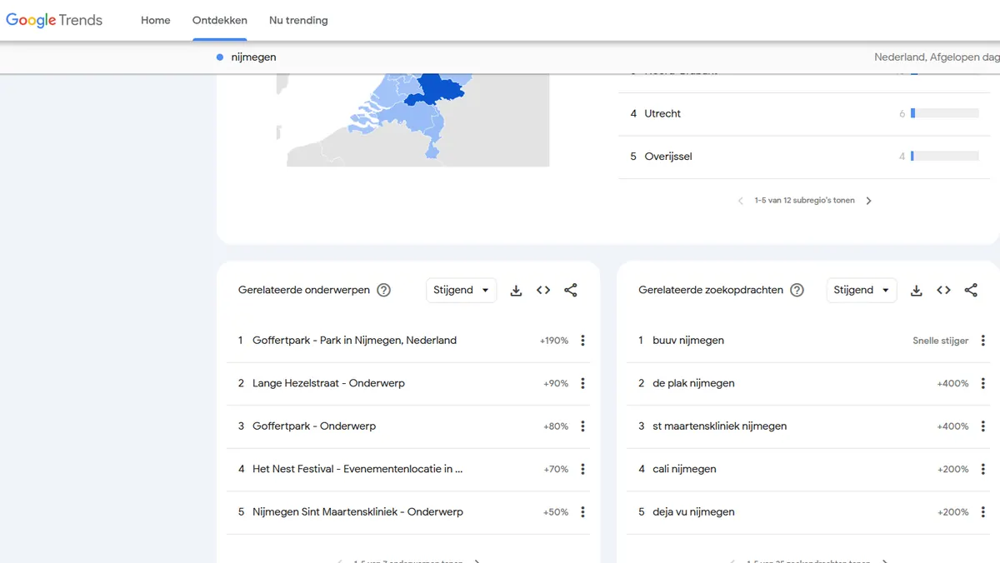
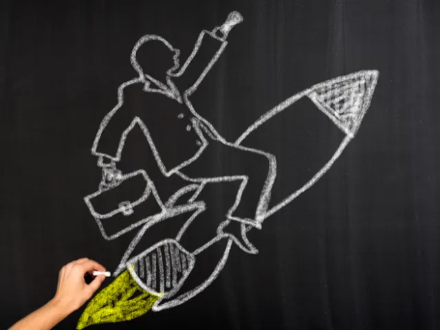

Stap voor Stap je bedrijf starten in Nijmegen: Alles wat je moet weten
Gepubliceerd op 30 augustus 2024
Onderdeel van de gids Ondernemen in Nijmegen

Je hebt een briljant idee en bent klaar om je eigen bedrijf te starten in Nijmegen, maar je weet niet precies waar je moet beginnen. Geen zorgen, je bent niet de enige! Het opzetten van een bedrijf kan overweldigend lijken, vooral als je nog nooit eerder een onderneming hebt gestart. Gelukkig zijn er duidelijke stappen die je kunt volgen om je idee om te zetten in een succesvol bedrijf. In deze gids nemen we je stap voor stap mee door alles wat je moet weten — van het verkennen van de markt tot het aanvragen van subsidies. Zo maak je van jouw droom werkelijkheid en zet je met vertrouwen de eerste stappen naar ondernemerschap in Nijmegen.
Use Case
We leggen in deze use case stap voor stap uit hoe je een bedrijf moet starten in Nijmegen. Als voorbeeld gebruiken we een persoon die een foto studio wilt openen. Door te werken met een voorbeeld krijg je direct inzicht in de stappen en kan je deze toepassen daar waar nodig voor je eigen idee.
1. Verken de Markt in Nijmegen: Ken je Klanten en Concurrenten
Je hebt besloten om een fotostudio te openen in Nijmegen, maar voordat je een locatie huurt en begint met het inrichten van je studio, is het cruciaal om de markt te verkennen. Zo kun je ontdekken wie je klanten zijn, waar de meeste vraag naar is, en hoe je jezelf kunt onderscheiden van andere fotografen in de regio.
Hoe doe je dit effectief?
– 1.1. identificeer je doelgroep
Bepaal wie je ideale klanten zijn voor je fotostudio. Wil je je richten op bruidsfotografie, familieportretten, zakelijke portretten, of iets anders? Gebruik tools zoals Google Trends om te zien welke soorten fotografie populair zijn in Nijmegen. Kijk ook op lokale Facebook-groepen of forums, zoals “Nijmegen Bruiloften” of “Nijmegen Ouders,” om te ontdekken wat mensen zoeken en waar ze interesse in hebben.
– 1.2. voer een concurrentieanalyse uit
Maak een lijst van andere fotostudio’s en freelance fotografen in Nijmegen. Bezoek hun websites en sociale media-profielen om te zien welke diensten ze aanbieden, welke prijzen ze hanteren, en hoe ze zichzelf promoten. Ga na welke fotografen vaak genoemd worden in lokale bladen of online reviews. Vraag jezelf af: Wat doen zij goed? Wat zijn hun zwakke punten? Welke unieke stijl of service kan jij bieden die hen niet hebben?
– 1.3. analyseer de locatiegrondslagen
Bepaal waar je je fotostudio wilt openen. Zoek uit welke wijken of buurten populair zijn onder jouw doelgroep. Als je je richt op gezinsfotografie, zou een locatie dichtbij woonwijken of scholen logisch zijn. Voor zakelijke portretten is een studio in het centrum of nabij kantoren misschien aantrekkelijker. Praat met lokale makelaars en gebruik data van de gemeente Nijmegen om te ontdekken welke locaties veel verkeer genereren en welke panden betaalbaar zijn.
– 1.4. praat met potentiële klanten
Voer gesprekken met mensen in Nijmegen die mogelijk interesse hebben in jouw diensten. Organiseer een online enquête of vraag direct feedback via social media. Vraag mensen bijvoorbeeld wat zij belangrijk vinden bij het boeken van een fotoshoot, hoeveel ze bereid zijn te betalen, en wat voor hen een fotostudio aantrekkelijk maakt. Overweeg om bij lokale evenementen of markten aanwezig te zijn om direct met potentiële klanten te praten.
– 1.5. gebruik openbare data en rapporten
Maak gebruik van gegevens van de Kamer van Koophandel of de gemeente Nijmegen om te onderzoeken hoeveel bedrijven actief zijn in de fotografiemarkt en welke doelgroepen in jouw omgeving wonen. Bijvoorbeeld, als je merkt dat er veel jonge gezinnen in een bepaalde wijk wonen, zou dat een perfecte plek kunnen zijn voor je studio gericht op gezinsfotografie.
– 1.6. monitor trends en innovaties
Blijf op de hoogte van de laatste trends in fotografie, zoals nieuwe stijlen, technieken of technologieën. Lees vakbladen en volg bekende fotografen op sociale media om te leren wat momenteel in trek is. Misschien ontdek je dat dronefotografie, fotoboeken of mini-shoots populair zijn, en kun je deze diensten in jouw aanbod opnemen om je te onderscheiden.
Door de markt in Nijmegen grondig te verkennen met deze aanpak, kun je beter begrijpen waar de kansen liggen voor jouw fotostudio en hoe je je bedrijf succesvol kunt positioneren om op te vallen in een competitieve markt.

2. Schrijf een Bedrijfsplan: Zet je idee om in een concreet plan
Een goed bedrijfsplan is essentieel voor het succesvol starten van je fotostudio in Nijmegen. Het helpt je om je doelen te verduidelijken, je strategieën te formuleren, en te begrijpen hoe je je bedrijf winstgevend kunt maken. Het bedrijfsplan dient niet alleen als een routekaart voor jou, maar kan ook noodzakelijk zijn voor het verkrijgen van financiering of subsidies.
Hoe stel je een bedrijfsplan op?
– 2.1. beschrijf je bedrijfsconcept
Begin met het duidelijk beschrijven van je fotostudio-idee. Wat maakt jouw studio uniek? Bied je een specifieke stijl van fotografie aan, zoals portretten, productfotografie of evenementenfotografie? Welke services en producten ga je aanbieden? Bijvoorbeeld, als je naast fotoshoots ook fotoboeken en afdrukken aanbiedt, vermeld dit dan. Dit deel van je plan moet helder maken wat jouw studio onderscheidt van concurrenten.
– 2.2. stel je doelstellingen vast
Formuleer duidelijke en haalbare doelstellingen voor je fotostudio. Wat wil je bereiken in het eerste jaar? Dit kunnen omzetdoelen zijn, het aantal klanten dat je wilt aantrekken, of het aantal fotoshoots dat je hoopt te realiseren. Bijvoorbeeld, je kunt doelen stellen zoals “50 fotoshoots in het eerste kwartaal” of “Een klanttevredenheidsscore van 90%.”
– 2.3. analyseer je doelgroep
Werk verder uit wie je doelklanten zijn. Wat zijn hun demografische kenmerken, zoals leeftijd, geslacht, inkomen, en interesses? Hoe vind je hen en hoe spreek je hen aan? Gebruik de informatie uit je marktonderzoek om gedetailleerde klantprofielen op te stellen. Als je bijvoorbeeld gezinnen als doelgroep hebt, beschrijf dan hoe je hen via sociale media of lokale evenementen kunt bereiken.
– 2.4. ontwikkel je marketingstrategie
Beschrijf hoe je je fotostudio gaat promoten en klanten gaat aantrekken. Welke marketingkanalen ga je gebruiken? Denk aan een professionele website, sociale media, lokale advertenties, en samenwerkingen met andere bedrijven. Voor een fotostudio kan een visueel aantrekkelijke website en actieve aanwezigheid op Instagram en Facebook belangrijk zijn. Overweeg ook lokale partnerschappen met weddingplanners of bedrijven die evenementen organiseren.
5 Succesvolle Marketingstrategieën voor Lokale Bedrijven in Nijmegen– 2.5. maak een operationeel plan
Detailleer hoe je je fotostudio dagelijks zult runnen. Denk aan de benodigde apparatuur, personeelsbehoeften, en de inrichting van je studio. Maak een lijst van benodigde camera’s, lenzen, verlichting en andere benodigdheden. Plan ook hoe je je studio gaat inrichten voor verschillende soorten fotoshoots en hoe je je klantenservice en afspraken gaat beheren.
– 2.6. stel een financieel plan op
Een financieel plan is cruciaal voor het begrijpen van je kosten en inkomsten. Maak een begroting voor je opstartkosten, zoals apparatuur, huur, en marketing. Bereken je verwachte maandelijkse uitgaven en inkomsten, en stel een prijsstrategie op die zowel concurrerend als winstgevend is. Overweeg ook een kasstroomprognose om te zorgen dat je altijd voldoende liquide middelen hebt om je operationele kosten te dekken.
– 2.7. evalueer risico’s en stel een risicomanagementplan op
Identificeer mogelijke risico’s voor je fotostudio, zoals seizoensgebonden dalingen in klanten, technische problemen, of concurrentie. Stel een plan op om deze risico’s te beheersen. Dit kan inhouden dat je een buffer opbouwt voor stille perioden, regelmatig onderhoud aan je apparatuur plant, of je positionering versterkt om je te onderscheiden van concurrenten.
Een gedetailleerd en goed doordacht bedrijfsplan helpt je om je idee concreet te maken en biedt je de richting en structuur die je nodig hebt om succesvol te starten en groeien. Het is je roadmap naar een succesvolle fotostudio in Nijmegen, en kan cruciaal zijn voor het aantrekken van investeringen of subsidies.

Laat ons u helpen om uw bereik te vergroten: Bekijk de mogelijkheden3. Kies de juiste rechtsvorm: zet je fotostudio op
Het kiezen van de juiste rechtsvorm voor je fotostudio is cruciaal omdat dit invloed heeft op je aansprakelijkheid, belastingverplichtingen en administratieve verantwoordelijkheden. Hier lees je hoe je een weloverwogen beslissing kunt nemen:
Begrijp de belangrijkste rechtsvormen
– 3.1. Eenmanszaak:
– Voordelen: Eenvoudig en goedkoop op te zetten. Je hebt volledige controle over je bedrijfsbeslissingen en winst. Minimale administratieve vereisten.
– Nadelen: Je bent persoonlijk aansprakelijk voor eventuele schulden of juridische problemen. Dit betekent dat je persoonlijke bezittingen op het spel kunnen staan als je bedrijf financiële problemen heeft.
– 3.2. Vennootschap Onder Firma (VOF):
– Voordelen: Gedeelde verantwoordelijkheden en middelen. Partners kunnen hun vaardigheden en kapitaal combineren, wat voordelig kan zijn voor een start-up. Minder formeel dan een BV.
– Nadelen: Elke partner is persoonlijk aansprakelijk voor de schulden en verplichtingen van de onderneming. Geschillen tussen partners kunnen de onderneming beïnvloeden.
– 3.3. Besloten Vennootschap (BV):
– Voordelen: Beperkte aansprakelijkheid. Je persoonlijke bezittingen zijn beschermd tegen zakelijke schulden. Mogelijk meer geloofwaardigheid bij klanten en leveranciers.
– Nadelen: Complexer en duurder op te zetten. Vereist meer administratieve werkzaamheden, inclusief regelmatige financiële rapportages en vennootschapsbelastingaangiften.
Wanneer je net begint is het in de meeste gevallen verstandig om een eenmanszaak op te richten. Het grote voordeel is dat je tot €20.000 geen belasting hoeft te betalen over de inkomsten. Je kan je namelijk aanmelden voor de Klein Ondernemers Rekening oftewel de KOR. Lees hier meer over de KOR.
4. Verkrijg de benodigde vergunningen en verzekeringen
Bij het starten van je fotostudio in Nijmegen is het essentieel om alle benodigde vergunningen en verzekeringen te regelen. Dit zorgt ervoor dat je bedrijf legaal opereert en beschermt je tegen mogelijke risico’s.
4.1. controleer vergunningseisen
– Algemene Bedrijfsvergunning: Vraag een algemene bedrijfsvergunning aan bij de gemeente Nijmegen. Dit bevestigt dat je bedrijf voldoet aan lokale regels.
– Bestemmingsplan: Zorg ervoor dat je het pand voor je fotostudio kunt gebruiken volgens het bestemmingsplan. Dit voorkomt problemen met de gemeente of verhuurder.
4.2. registreer je bedrijf bij de Kamer van Koophandel
– Inschrijven: Ga naar de Kamer van Koophandel (KvK) om je fotostudio officieel in te schrijven. Dit kan online of door een afspraak te maken bij een KvK-kantoor.
– Benodigde Documenten: Neem je identiteitsbewijs, een bedrijfsplan en eventuele documenten over je gekozen rechtsvorm mee. Bij inschrijving ontvang je een KvK-nummer, dat je nodig hebt voor belastingaangiften en zakelijke transacties.
4.3. regel je verzekeringen
– Aansprakelijkheidsverzekering: Dek eventuele schade of letsel tijdens fotoshoots. Dit beschermt je tegen claims van klanten of derden.
– Apparatuurverzekering: Verzeker je camera’s en andere apparatuur tegen verlies of schade. Dit is belangrijk voor de hoge kosten van fotomateriaal.
4.4. belastingregistratie
– Belastingnummer: Registreer je bij de Belastingdienst om een belastingnummer te ontvangen voor je belastingaangiften en BTW-registratie. Deze krijg je wanneer je het bedrijf gaat inschrijven bij de Kamer van Koophandel.
5. Zoek naar Subsidies en Financieringsmogelijkheden
Voor het opstarten van je fotostudio in Nijmegen zijn er mogelijk subsidies en andere financieringsmogelijkheden die je kunt benutten. Dit kan je helpen om de kosten te dekken en je bedrijf sneller van de grond te krijgen.
5.1. onderzoek beschikbare subsidies
– Gemeentelijke Subsidies: Controleer bij de gemeente Nijmegen of er subsidies beschikbaar zijn voor startende ondernemers. Soms zijn er specifieke regelingen voor creatieve sectoren of voor bedrijven die bijdragen aan de lokale economie.
– Regionale Subsidies: Kijk naar subsidies van regionale ontwikkelingsmaatschappijen of andere lokale initiatieven die gericht zijn op het ondersteunen van nieuwe bedrijven in de regio.
5.2. verken financieringsopties
– Bankleningen: Overweeg een lening bij een bank voor startkapitaal. Bereid een gedetailleerd bedrijfsplan voor om je kredietwaardigheid te verhogen.
– Crowdfunding: Gebruik crowdfundingplatforms om investeerders te vinden die geïnteresseerd zijn in je fotostudio-idee. Dit kan een manier zijn om kapitaal te verkrijgen zonder traditionele leningen.
– Investeerders: Zoek naar investeerders of business angels die mogelijk geïnteresseerd zijn in het financieren van je start-up. Dit kan extra kapitaal en ook waardevolle advies en netwerkmogelijkheden opleveren.
– Eigen netwerk: Je kan uiteraard ook in je eigen netwerk gaan kijken of er iemand is bij wie je centjes kan ophalen / lenen om je op weg te helpen. In het geval van een fotostudio kan je in de basis klein beginnen met alleen de aanschaf van een goede camera.
5.3. controleer belastingvoordelen
– Belastingvoordeel: Bekijk of je recht hebt op belastingvoordelen voor investeringen in je bedrijf. Sommige belastingregelingen kunnen voordelig zijn bij de aankoop van apparatuur of andere bedrijfsmiddelen. Denk hierbij aan de Klein Investerings Aftrek oftewel de KIA.
Laat ons u helpen om uw bereik te vergroten: Bekijk de mogelijkheden6. Bouw Een Netwerk Van Klanten en Partners
Een sterk netwerk is cruciaal voor de groei van je fotostudio in Nijmegen. Het helpt je niet alleen om klanten te vinden, maar ook om waardevolle zakelijke relaties op te bouwen.
6.1. netwerk lokaal
– Netwerkevenementen: Neem deel aan lokale netwerkbijeenkomsten, beurzen en zakelijke evenementen in Nijmegen. Dit biedt je de kans om andere ondernemers en potentiële klanten te ontmoeten en je naam bekend te maken.
– Lokale Gemeenschap: Word actief in de lokale gemeenschap. Dit kan door het sponsoren van evenementen, het deelnemen aan lokale initiatieven of het ondersteunen van goede doelen. Dit helpt je om je studio te profileren en relaties op te bouwen.
6.2. werk samen met andere bedrijven
– Partnerships: Zoek samenwerkingsmogelijkheden met andere bedrijven die complementaire diensten aanbieden, zoals bruilofts- of evenementplanners. Dit kan leiden tot wederzijdse aanbevelingen en gezamenlijke promoties.
– Cross-promotie: Werk samen met lokale bedrijven voor cross-promotie. Bijvoorbeeld, een samenwerking met een modewinkel kan resulteren in het promoten van je fotostudio voor het maken van modefoto’s in hun winkel.
6.3. benut sociale netwerken
– Online Netwerken: Gebruik platforms zoals LinkedIn om zakelijke contacten te leggen en je netwerk uit te breiden. Deel je werk en betrokkenheid bij relevante groepen om je zichtbaarheid te vergroten.
– Social Media: Interactie met je volgers op sociale media kan helpen om een loyale klantenbasis op te bouwen. Reageer op reacties, deel klantverhalen en moedig je volgers aan om jouw studio te delen met hun netwerk.
4. vraag om aanbevelingen
– Tevreden Klanten: Vraag tevreden klanten om aanbevelingen en reviews. Mond-tot-mondreclame is een krachtige manier om nieuwe klanten aan te trekken en je reputatie te versterken.
– Referral Programma’s: Overweeg het opzetten van een referral programma waarbij bestaande klanten een beloning krijgen voor het doorverwijzen van nieuwe klanten naar je fotostudio.
5. onderhoud klantrelaties
– Follow-ups: Houd contact met klanten na hun fotoshoot. Stuur hen bijvoorbeeld een bedankje of vraag om feedback. Dit helpt om een sterke relatie te onderhouden en kan leiden tot herhaalopdrachten.
– Nieuwsbrief: Overweeg een nieuwsbrief om klanten op de hoogte te houden van nieuwe diensten, aanbiedingen en updates over je fotostudio. Dit houdt je in de gedachten van je klanten en kan hen aansporen om terug te komen.
6. blijf betrokken bij de branche
– Trends Volgen: Blijf op de hoogte van de laatste trends en ontwikkelingen in de fotografiebranche. Dit helpt je om relevant te blijven en nieuwe kansen te benutten.
– Opleidingen en Workshops: Volg trainingen en workshops om je vaardigheden te verbeteren en nieuwe technieken te leren. Dit kan je helpen om je netwerk uit te breiden en je diensten te verbeteren.
Door een sterk netwerk van klanten en zakelijke partners op te bouwen, vergroot je de zichtbaarheid van je fotostudio in Nijmegen en creëer je kansen voor groei en samenwerking. Blijf actief betrokken en zorg voor duurzame relaties om je bedrijf te versterken.
7. Vraag een Octrooi aan of Registreer je Merk
Het beschermen van je creatieve ideeën en bedrijfsnaam is cruciaal voor het langdurige succes van je fotostudio in Nijmegen. Door octrooien of merkregistraties aan te vragen, kun je je intellectuele eigendom beschermen en je concurrentievoordeel behouden.
Als je een innovatieve techniek of een uniek product hebt ontwikkeld, zoals een speciale fotografie-methode of een nieuw product, kan het aanvragen van een octrooi een slimme zet zijn. Een octrooi geeft je exclusieve rechten om jouw uitvinding te gebruiken en te verkopen, wat voorkomt dat anderen jouw idee kopiëren of gebruiken. Voordat je een octrooi aanvraagt, is het belangrijk om te onderzoeken of jouw idee al bestaat door octrooidatabases te doorzoeken en eventueel een octrooigemachtigde te raadplegen.
7.1 Registreren van een merknaam
Daarnaast is het registreren van je merknaam en logo essentieel om je merk te beschermen. Door je merk te registreren, voorkom je dat anderen jouw naam gebruiken of verwarren met hun eigen merk. Dit helpt je om je merkidentiteit te beschermen en zorgt ervoor dat klanten je niet verwarren met concurrenten. Je kunt je merk registreren bij het Benelux Bureau voor Intellectuele Eigendom (BOIP) of het Europees Octrooibureau (EOB), afhankelijk van hoe breed je bescherming wilt hebben. Zorg ervoor dat je alle vereiste documenten en informatie correct invult bij je aanvraag.
Voordat je een merkregistratie indient, is het ook verstandig om te controleren of de naam en het logo die je wilt gebruiken al in gebruik zijn. Dit voorkomt juridische conflicten en zorgt ervoor dat je aanvraag niet wordt afgewezen. Vergeet niet om ook te controleren of de domeinnaam die je voor je website wilt gebruiken beschikbaar is en overeenkomt met je merknaam.
7.2 Copyright
Voor je fotografie en andere creatieve werken heb je automatisch auteursrechten. Het is een goed idee om je werk te markeren met copyright-informatie en eventueel je auteursrechten te registreren voor extra bescherming. Zorg er ook voor dat je duidelijke contracten gebruikt met klanten en medewerkers om vast te leggen wie de eigenaar is van de rechten op de gemaakte foto’s en andere creatieve content.
Raadpleeg een juridische expert die gespecialiseerd is in intellectueel eigendom voor advies over het aanvragen van octrooien of merkregistraties. Dit zorgt ervoor dat je aan alle juridische vereisten voldoet en dat je aanvraag correct wordt ingediend. Vergeet niet om je octrooien en merkregistraties up-to-date te houden en indien nodig te vernieuwen om blijvende bescherming te waarborgen.
Door deze stappen te volgen, kun je je creatieve ideeën en bedrijfsnaam effectief beschermen en je fotostudio in Nijmegen onderscheiden van de concurrentie.
Meer ondernemer tips lezen? Klik dan hier voor de overige blog artikelen.
Accountants en boekhouders in Nijmegen
Zin om te beginnen? In onze bedrijvengids vind je alle 40 accountants en boekhouders in Nijmegen, met openingstijden, kenmerken en een kaart.
Bekijk alle 40 accountants en boekhouders in Nijmegen
Heb je zelf een accountant? Laat je hier uitlichten.